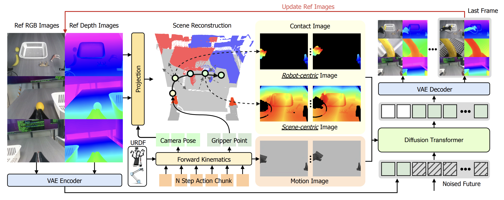
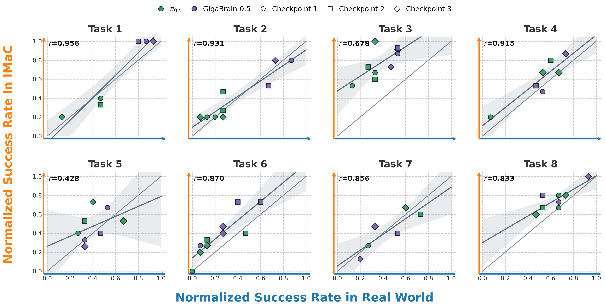

Embodied world models promise to serve as real-world simulators for robot policy evaluation and closed-loop rollout, but their reliability depends on how precisely they condition future video prediction on robot actions. Existing action-conditioned video models often encode future actions as compact vectors, leaving the model to infer fine-grained spatial consequences indirectly. iMaC addresses this by translating future actions into dense image-like controls. It uses robot URDF and forward kinematics to render future robot observations as motion images, and uses RGB-D geometry to construct two-stream contact images that describe robot-scene spatial relations. These controls guide future-video prediction while preserving a scalable image-to-video modeling interface.

Given a reference RGB observation and a future action sequence, iMaC converts joint actions into future robot configurations through URDF and forward kinematics. Rendered robot observations provide motion-image controls. Auxiliary depth prediction and pointcloud geometry provide contact-image controls that describe current scene to future gripper distances and future robot to current scene distances. The controls are injected as video/image controls into the future-video world model.
Generated Results and Conditions
videos/task_01_grid.mp4
Generated Results and Conditions
videos/task_02_grid.mp4
Generated Results and Conditions
videos/task_03_grid.mp4
Generated Results and Conditions
videos/task_04_grid.mp4
Generated Results and Conditions
videos/task_05_grid.mp4
Generated Results and Conditions
videos/task_06_grid.mp4
Generated Results and Conditions
videos/task_07_grid.mp4
Generated Results and Conditions
videos/task_08_grid.mp4
Each task shows the generated RGB rollout together with its action-derived controls: URDF/FK motion images, scene-to-gripper contact images, and robot-to-scene contact images across the three camera views.

iMaC is designed for evaluating robot policies through closed-loop rollout in a learned real-world simulator. The correlation measures whether world-model scores preserve policy performance across different model families and across checkpoints from the same model, supporting both model comparison and iterative checkpoint selection.